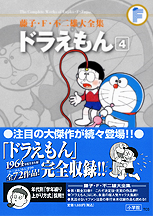

| |


定価：本体1,600円＋税
A5判／612ページ
好評発売中！
★は初めて単行本に収録される
作品です。
※収録内容は変更になる
場合があります。

|
★そくせきおとしあな（小一71年04月号）
★まほうのじゃぐち（小一71年05月号）
かげえごっこ（小一71年06月号）
変装服（小一71年07月号）
ドラえもんのポケット（小一71年08月号）
手品ふろしき（小一71年09月号）
動物キャンディー（小一71年10月号）
そっくりクレヨン（小一71年11月号）
クリスマスツリーのたね（小一71年12月号）
ふくわらい石けん（小一72年01月号）
★べんきょうねまき（小一72年02月号）
★ロケットガム（小一72年03月号）
どこでも大砲（小二72年04月号）
バッジを作ろう（小二72年05月号）
ウルトラミキサー（小二72年06月号）
★オバケせんこう（小二72年07月号）
お返しハンド（小二72年08月号）
おしかけ電話（小二72年09月号）
おせじ口べに（小二72年10月号）
引きよせかがみ（小二72年11月号）
人形あそび（小二72年12月号）
薬製造機（ふしぎな薬）（小二73年01月号）
まほうのひも（小二73年02月号）
ヨンダラ首わ（小二73年03月号）
念力目薬（小三73年04月号）
四次元サイクリング（小三73年05月号）
自信ヘルメット（小三73年06月号）
ぼく、マリちゃんだよ（小三73年07月号）
ぞうとおじさん（小三73年08月号）
正直太郎（小三73年09月号）
タヌキさいふ（小三73年10月号）
オオカミ一家（小三73年11月号）
日づけ変更カレンダー（小三73年12月号）
走れ！ ウマタケ（小三74年01月号）
はこ庭スキー場（小三74年02月号）
さようなら、ドラえもん（小三74年03月号） |
帰ってきたドラえもん（小四74年04月号）
ウラメシズキン（小四74年05月号）
マジックボックス（小四74年06月号）
ゆめの町ノビタランド（小四74年07月号）
おもちゃの兵隊（小四74年08月号）
ふろしきタクシー（小四74年09月号）
台風発生機（小四74年10月号）
うつしぼくろ（小四74年11月号）
ジャイアンズをぶっとばせ（小四74年12月号）
人間すごろく（小四75年01月号）
名刀【電光丸】（小四75年02月号）
人間うつしはおそろしい（小四75年03月号）
消しゴムでノッペラボー（小五75年04月号）
ライター芝居（小五75年05月号）
ぐうたらの日（小五75年06月号）
変心うちわ（小五75年07月号）
ろく音フラワー（小五75年08月号）
人間ラジコン（小五75年09月号）
いたわりロボット（小五75年10月号）
たとえ胃の中、水の中（小五75年11月号）
いないいないシャワー（小五75年12月号）
弟をつくろう（小五76年01月号）
仮病薬（小五76年02月号）
アクト・コーダー（小五76年03月号）
化石大発見!!（小六76年04月号）
にっくきあいつ（小六76年05月号）
Yロウ作戦（小六76年06月号）
正義のみかたセルフ仮面（小六76年07月号）
合体のりでハイキング（小六76年08月号）
天気決定表（小六76年09月号）
チューケンパー（小六76年10月号）
からだの皮をはぐ話（小六76年11月号）
夢まくらのおじいさん（小六76年12月号）
ポータブル国会（小六77年01月号）
かがみでコマーシャル（小六77年02月号）
りっぱなパパになるぞ！（小六77年03月号） |